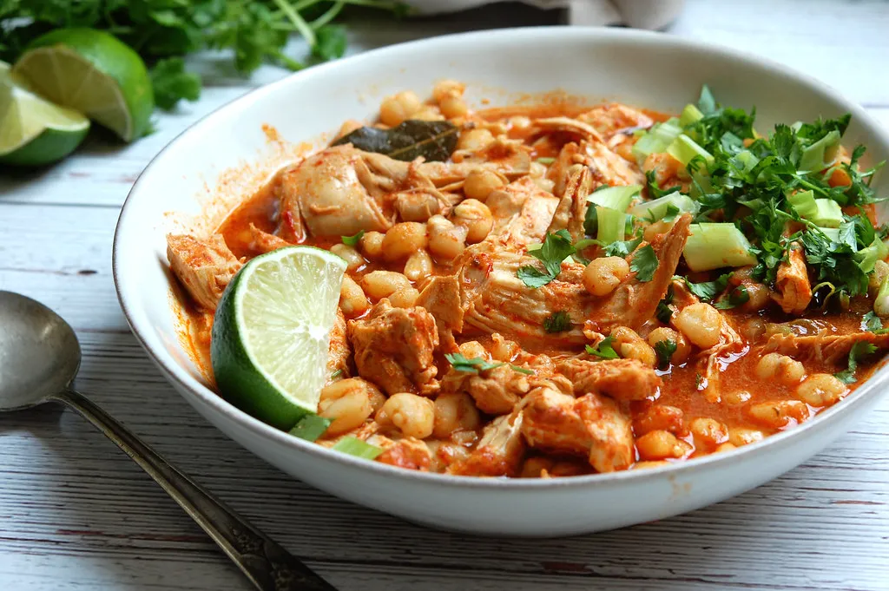

Authenthic Chicken Pozole Rojo

Authentic chicken pozole rojo recipe is a hearty, nourishing Mexican
chicken and hominy stew that deserves a place on your dinner table, or
for a celebration meal.
This chicken pozole rojo recipe-or pozole rojo con pollo-is a Mexican
chicken and hominy stew, made with homemade red chili sauce, spices, and
lots of earthy flavor. Traditionally served for holiday celebrations,
pozole can also make a good dinner with leftovers.
Chicken pozole is made from nourishing, flavorful ingredients, namely
chicken, hominy, guajillo peppers, and fresh toppings like cabbage,
cilantro, and lime. Pozole (pronounced poh-ZOLE-eh) makes a fantastic
dinner.
Ingredients
- 3 to 4 Guajillo Peppers, sliced (Alternate: dried ancho chilis)
- 2 Tablespoons of Vegetable Oil
- 1 Cup of Water
- 3 Cloves of Garlic, peeled and gently smashed
- 1/2 White Onion, chopped
- 1 1/2 Pounds Boneless Chicken Breast
- 2 Bay Leaves
- 1 Tablespoon Dried Oregano
- 1 Pint (2 Cups) Chicken Broth, or enough to cover the Chicken in the
pot
- 20 Ounces Canned Hominy, drained (or two cans worth)
- 1 Teaspoon Kosher Salt, and more to taste
- 3 Scallion, sliced thin
- 1 Avocado, diced
- 1 Bunch of Radishes, sliced thin
- 1/2 Bunch of Cilantro, roughly chopped
- 1/4 Small head of Cabbage, thinly sliced
Directions
- In a medium-sized pot, heat the chilis with the oil over medium
heat. Stir. When soft, add 1/2 Cup water (Careful; it may splatter a
bit), the garlic, and onion. Cook, stirring frequently, until softened,
about 10 minutes.
- Puree the chili, garlic and onion mixture, adding water as necessary
to loosen it enough to blend. Strain well though a fine strainer,
pressing with a spatula. Discard the residue.
- Slice the chicken into strips and add it to the pot with the bay
leaves, oregano, chicken broth, strained chili sauce, and hominy.
Simmer partially covered, for one hour. Add the salt. taste for
seasoning and adjust.
- Ladle into bowls, and serve with the garnishes on a plate,
family-style.